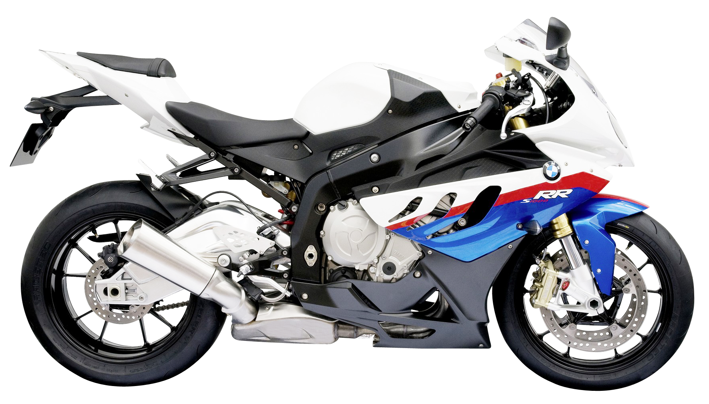

RR, with greater precision and focus, is now even more focused on pure performance. For all those who always
ask for
more. To themselves. Every turn. And to your RR. Following the #NeverStopChallenging philosophy

Toyota Supra MK-5 - The Legend Returns
Drive in an adrenaline-powered world, where pure power, well-defined handling and design
ready to
careers come together to revolutionize your expectations.
Yamaha R1M - The Ultimate Superbike
The Yamaha R1M is a high-performance motorcycle designed for those who demand the best in speed, handling,
and
technology. Featuring a powerful 998cc inline-four engine, advanced electronics, and a lightweight chassis,
the R1M
delivers an unparalleled riding experience. With its cutting-edge aerodynamics and race-inspired design,
this superbike
is built to dominate both the track and the road. Whether you're a professional racer or an enthusiast, the
Yamaha R1M
offers the ultimate in performance and precision.
Lamborgini Urus - The Ultimate SUV
The Lamborghini Urus is the first super sports utility vehicle in the world that fuses the soul of a super
sports
vehicle with the practical functionality of an SUV.